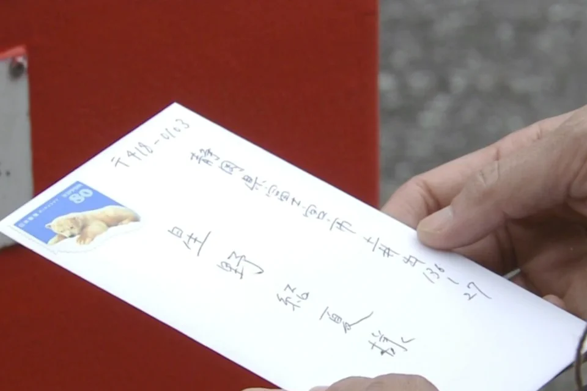

星野 結夏 さま 光生より / 目黒川沿いにて

暦の上に春は立ちながら厳しい寒さが続いておりますが、いかがお過ごしですか？風邪などひいていませんか？霜焼けなどしていませんか？突然の手紙、ごめんなさい。まだまだ寒く長い夜のついでに目を通していただければ幸いです。
历书上已经立了春，可严寒还在继续，你过得还好吗？有没有感冒？有没有生冻疮？突然寄信给你，抱歉。若你能在依然寒冷漫长的夜里，就着这点空当看上一眼，我便不胜欣慰。
まずわが家に暮らして3年目を迎える2匹の猫に関してお知らせします。彼らはなぜか最近テレビをよく見ます。株価のニュースを見ながら話をしています。彼らの人生に株価が何か作用することがあるのでしょうか？
先说家里那两只猫吧，它们在我家已经住到第三年了。不知为何，它们最近常看电视，边看股价新闻边聊天。股价这种东西，对它们的人生究竟会起什么作用呢？
金魚カフェでは姉の体調もあって最近継男さんがラテアートを描いています。その絵の作風が常軌を逸しており、女性客が悲鳴を上げて帰ることしばしばです。
金鱼咖啡馆那边，因为姐姐要调养身体，最近由继男姐夫画拉花。他的画风实在离谱，常有女客人尖叫着夺门而去。
上原さんに紹介されて先日ついに河合さんと対面しました。驚きです。河合さんはまるでギリシャ彫刻のような二枚目だったのです。握手の手を差し伸べ、「やあ、初めまして」とおっしゃっていました。友達になれるかどうかはちょっと分かりません。
经上原先生介绍，前些日子终于和河合先生见了面。我很吃惊。河合先生长得就像希腊雕像，是个十足的美男子。他伸出手来同我握手，说了句“哟，初次见面”。能不能和他成为朋友，我还有点不确定。
目黒川を行き交う人々は桜の木を見上げて開花の時季を待ちわびながら、すでに花見の約束を取り交わしています。また、あのにぎやかな季節が訪れるのですね！
目黑川来来往往的人，抬头望着樱树，盼着花开时节，已经把赏花的约都约好了。那个热闹的季节，又要来了呢。
昨日、君の夢を見ました。君がたくさんの風船を抱えてくる夢でした。君は無数の風船を僕と自分の体に結び付けました。僕と君は風船に軽く体を持ち上げられて空を飛びました。目黒川を見下ろすとマチルダとはっさくが見上げてるのが見えました。上原さんたちが赤ん坊を抱いて手を振っていました。僕は風に流されて飛んでいくしかない、自分の非力さが少し悲しかったです。
昨天，我梦见了你。梦见你抱着一大堆气球走来。你把无数只气球系在我和你身上。我和你被气球轻轻托起，飞上了天空。俯瞰目黑川时，看见玛蒂尔达和八朔正抬头望着我们。上原夫妇抱着婴儿朝我们挥手。而我只能被风带着飘走，为自己的无力，有一点难过。
川沿いの道を今日も歩きます。不思議と一人になった気がしません。まだまだ僕は毎日を君の記憶と共に暮らしています。君がよくお風呂場で歌っていた歌、「静かに、静かに、手を取り、手を取り」、そんなふうに始まる歌、そんな光景。
今天我依旧走在河边的路上。奇怪的是，并不觉得自己是一个人。我仍旧每天和关于你的记忆一起生活。你常在浴室里唱的那首歌——“静静地，静静地，牵起手，牵起手”——从这样一句开始的歌，这样的光景。
深夜二人でDVDを借りに出掛けたときのこと、月がずいぶんと大きなことに気がついた僕と君は、そもそもなぜ出掛けたのかさえ忘れて、夜中の散歩をしました。旧山手通りで焼き芋を買って、半分に割ったら大きさがまるで違って、じゃんけんして食べて、笑って、手をつないで、僕が結婚を口にしたら、君は焼き芋いっぱい頬張った口で声にならない返事をしました。そんな始まり、そんな光景。
想起深夜两个人出门租 DVD 的那次。发现月亮格外大的我和你，连原本为什么要出门都忘了，就在夜里散起步来。在旧山手大道买了烤红薯，掰成两半，大小差得离谱，于是猜拳决定谁吃哪半；吃着，笑着，牵着手。我说“我们结婚吧”，你满嘴塞着红薯，含含糊糊地应了一声。那样的开始，那样的光景。
君と結婚して知ったことがあります。洗面台に並んだ歯ブラシ、ベッドの中でぶつかる足、いつの間にか消えてる冷蔵庫のプリン、階段を先に下りること、階段を後から上がること、恋がいつしか日常に変わること、日常が喜びに変わること、間違えてはいて出掛けた女物の靴下、メールで頼まれる番組録画、背中をかくこと、怖い夢を見たら寄り添うこと、もう一人の父親、もう一人の母親、もう一つの古里、古里から届くミカン箱の中のハクサイ、日常が奏でる音楽、日常を伝え合うことの物語……ここにはまだそれが転がっています。部屋の隅に、電球の裏に、カーテンの隙間にくっついたまま。僕は今も毎日のように過去から訪れる君の愛情を受け取っています。
和你结婚以后，我懂得了一些事。洗手台上并排的牙刷，被窝里碰到的脚，不知何时消失的冰箱里的布丁，先下楼，后上楼，恋爱不知何时变成日常，日常又变成喜悦，穿错了女式袜子就出了门，发邮件来让我录节目，替你挠背，做了噩梦就挨着你睡，多了一位父亲，多了一位母亲，多了一个故乡，故乡寄来的、装在橘子箱里的白菜，日常演奏出的音乐，把日常讲给对方听的那些故事……这些东西如今还散落在这里。在房间的角落，在灯泡的背面，在窗帘的缝隙里，就那样贴着、留着。我至今仍每天领受着从过去而来的、你的爱意。
川沿いの道を今日も歩きます。一人ずつ二人で生きていたこと、僕の中に住んでいる君、君の中に迷い込んだ僕、不思議と一人になった気がしません。いつかまたそう思うことの愚かさを思いながらそれでも思います。夜中の散歩をして、じゃんけんして、食べて、笑って、手をつないで、焼き芋頬張りながら、また同じことを話すんです。
今天我依旧走在河边的路上。一个人一个人地、却又两个人一起活过的那些日子，住在我心里的你，误入你心里的我——奇怪的是，并不觉得自己是一个人。一边想着总有一天会觉得这样想的自己很愚蠢，一边还是这样想着。夜里散步，猜拳，吃东西，笑，牵着手，满口塞着烤红薯，再说一遍同样的话。
浜崎 光生HAMAZAKI KOSEI